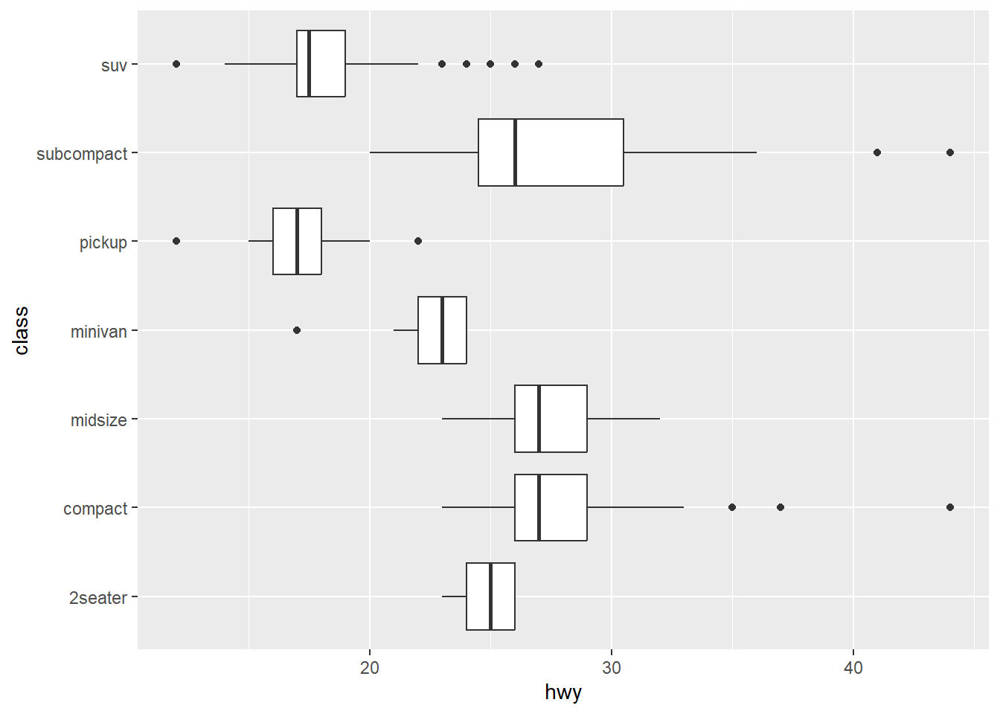
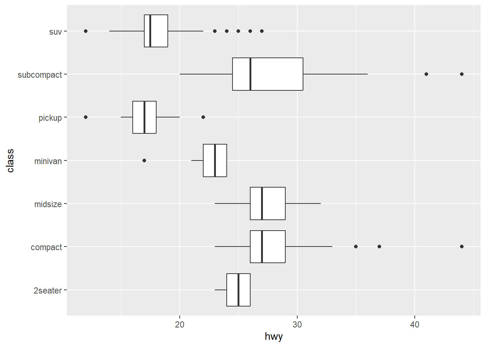
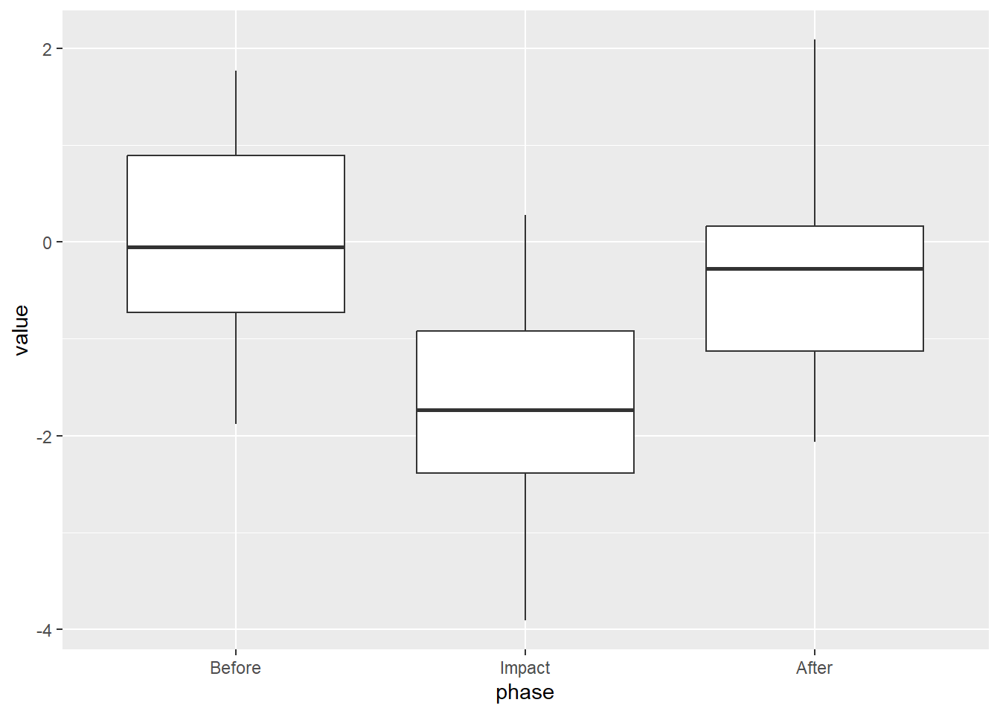
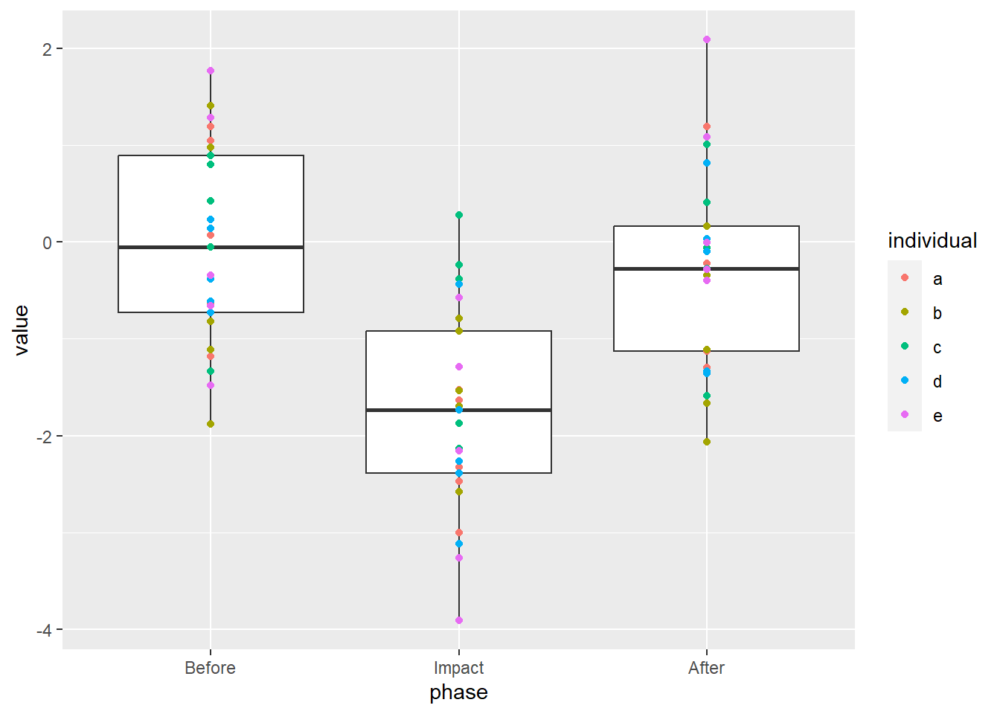
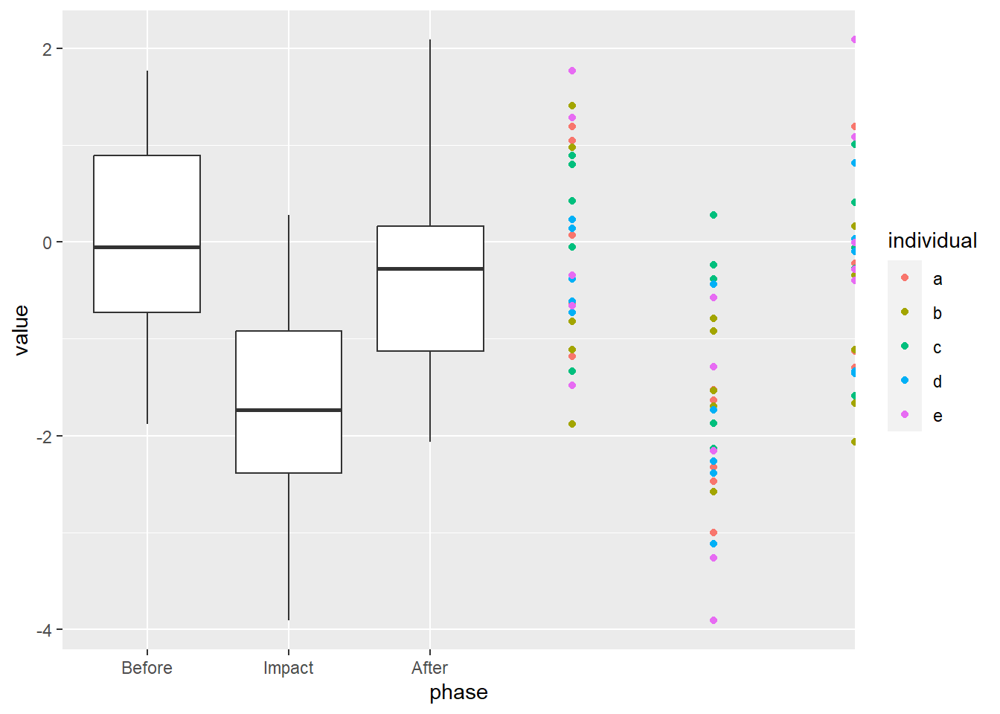
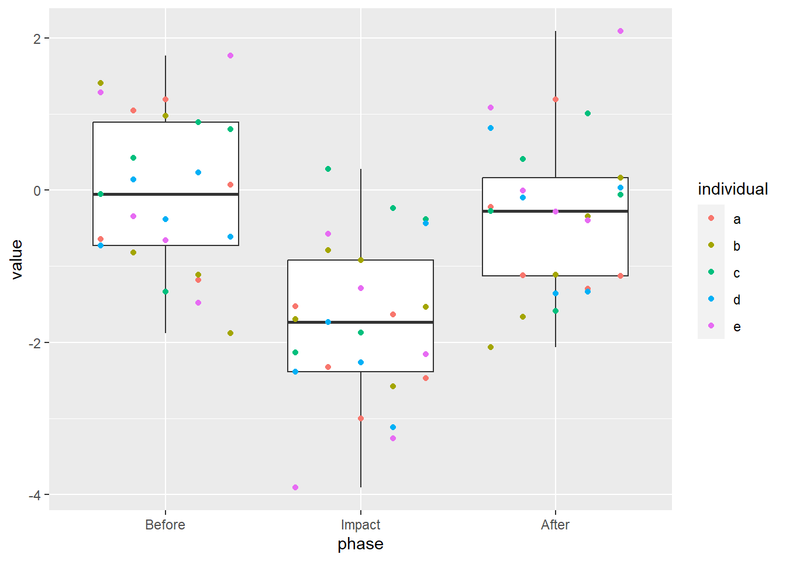

![]()
ggplot(mpg, aes(hwy, class)) +
geom_boxplot()
Before you start, know that this one is firmly in the “chart junk” category.
In a situation where I want to quickly view differences between some grouped data, I may use a box plot. A thick line in the center shows the mean, and the box itself displays the 25th-75th quartiles. The whiskers extend out to the observation no farther than 1.5 times this range. From ?ggplot2::geom_boxplot:
ggplot(mpg, aes(hwy, class)) +
geom_boxplot()
Alternately, if I have a sequence of observations, I may use a line to connect them and visualize how the data change over time. From ?ggplot2::geom_line:
ggplot(economics_long, aes(date, value01, colour = variable)) +
geom_line()But… what if I have grouped data that follow each other in time? Beyond committing what may be a statistical sin, how could I visualize this situation?
Our lab group does a lot of before-after-control-impact (BACI) studies. Because of this, we’ve taken to visualizing any changes during our experiments using box plots that show group behavior before, during, and after the experiment. This does assume that the observations are independent, which they aren’t; we have multiple observations for each individual which correlated through time. I wanted to be able to see what the time series for each individual was within the box I’ve just put them in.
So, here’s how I created the unholy union of a time series and a box plot, overlaying each individual time series on a box and whisker plot.
library(ggplot2); library(dplyr)
Attaching package: 'dplyr'The following objects are masked from 'package:stats':
filter, lagThe following objects are masked from 'package:base':
intersect, setdiff, setequal, unionmy_data <- tibble(
# Create five individuals with 15 measurements each
individual = rep(letters[1:5], each = 15),
# Create a time for each of the 15 measurements
time = rep(
seq.POSIXt(ISOdate(2020, 02, 03), by = 'min', length.out = 15),
times = 5),
# Group by experimental phase
phase = factor(
rep(
c('Before', 'Impact', 'After'), each = 5, times = 5
),
ordered = T,
levels = c('Before', 'Impact', 'After')
)
) |>
rowwise() |>
mutate(
# make fake data
value = ifelse(phase %in% c('Before', 'After'),
rnorm(1), rnorm(1, mean = -2))
)
my_data# A tibble: 75 × 4
# Rowwise:
individual time phase value
<chr> <dttm> <ord> <dbl>
1 a 2020-02-03 12:00:00 Before -0.641
2 a 2020-02-03 12:01:00 Before 1.05
3 a 2020-02-03 12:02:00 Before 1.19
4 a 2020-02-03 12:03:00 Before -1.18
5 a 2020-02-03 12:04:00 Before 0.0734
6 a 2020-02-03 12:05:00 Impact -1.52
7 a 2020-02-03 12:06:00 Impact -2.33
8 a 2020-02-03 12:07:00 Impact -3.00
9 a 2020-02-03 12:08:00 Impact -1.63
10 a 2020-02-03 12:09:00 Impact -2.47
# ℹ 65 more rowsEventually, we’ll want to find where, exactly, an observation falls in a given phase’s timeline. To do this, we’ll find start/end time for each trial phase and join them back in.
my_data <- my_data |>
group_by(phase) |>
summarize(time.start = min(time),
time.end = max(time)) |>
right_join(my_data)Joining with `by = join_by(phase)`my_data# A tibble: 75 × 6
phase time.start time.end individual time
<ord> <dttm> <dttm> <chr> <dttm>
1 Before 2020-02-03 12:00:00 2020-02-03 12:04:00 a 2020-02-03 12:00:00
2 Before 2020-02-03 12:00:00 2020-02-03 12:04:00 a 2020-02-03 12:01:00
3 Before 2020-02-03 12:00:00 2020-02-03 12:04:00 a 2020-02-03 12:02:00
4 Before 2020-02-03 12:00:00 2020-02-03 12:04:00 a 2020-02-03 12:03:00
5 Before 2020-02-03 12:00:00 2020-02-03 12:04:00 a 2020-02-03 12:04:00
6 Before 2020-02-03 12:00:00 2020-02-03 12:04:00 b 2020-02-03 12:00:00
7 Before 2020-02-03 12:00:00 2020-02-03 12:04:00 b 2020-02-03 12:01:00
8 Before 2020-02-03 12:00:00 2020-02-03 12:04:00 b 2020-02-03 12:02:00
9 Before 2020-02-03 12:00:00 2020-02-03 12:04:00 b 2020-02-03 12:03:00
10 Before 2020-02-03 12:00:00 2020-02-03 12:04:00 b 2020-02-03 12:04:00
# ℹ 65 more rows
# ℹ 1 more variable: value <dbl>POSIX dates are the number of seconds since midnight on Jan 1, 1970. While we can’t do easy math on a date, we can easily use the number of seconds. Let’s convert the POSIX dates to numeric; we can use this to translate each time series to a different scale in the next step, below.
my_data <- my_data |>
mutate_at(vars(starts_with('time')),
as.numeric)
my_data# A tibble: 75 × 6
phase time.start time.end individual time value
<ord> <dbl> <dbl> <chr> <dbl> <dbl>
1 Before 1580731200 1580731440 a 1580731200 -0.641
2 Before 1580731200 1580731440 a 1580731260 1.05
3 Before 1580731200 1580731440 a 1580731320 1.19
4 Before 1580731200 1580731440 a 1580731380 -1.18
5 Before 1580731200 1580731440 a 1580731440 0.0734
6 Before 1580731200 1580731440 b 1580731200 1.41
7 Before 1580731200 1580731440 b 1580731260 -0.822
8 Before 1580731200 1580731440 b 1580731320 0.976
9 Before 1580731200 1580731440 b 1580731380 -1.11
10 Before 1580731200 1580731440 b 1580731440 -1.88
# ℹ 65 more rowsSo… what does a box plot of this data look like?
ggplot(data = my_data, aes(x = phase, y = value)) +
geom_boxplot()
We see that our “Impact” dropped the mean and the Before and After periods are similar. Good, we coded it that way. What if we overlay the raw values?
ggplot(data = my_data, aes(x = phase, y = value)) +
geom_boxplot() +
geom_point(aes(color = individual))
What if we try to “nudge” the values away from the middle? Using the position argument of geom_point, we can provide how much we want the values “nudged”. This argument takes the output of another function, position_nudge.
ggplot(data = my_data, aes(x = phase, y = value)) +
geom_boxplot() +
geom_point(aes(color = individual),
position = position_nudge(x = 3))
That… didn’t quite do what we wanted.
ggplot2 creates spaceWe see above that all of points fall on a line in the dead center of the boxes. It’s important to recognize how ggplot2 allocates space in a box plot: the total width available to each box is equal to 1, running from -0.5 to 0.5, with 0 being the center of each variable (where the box whiskers are). This includes the space between boxes, so ~2/3 of this space given for the box and 1/3 is given to space on either side.
We want to translate the observation time (within the given trial phase start/end range) to a range that can fit within the boxes of the box plot. Since 2/3 of the space provided for each box is given to the box, itself, this range is from -1/3 to +1/3. We can use this number to “nudge” the observation to the left (negative values) or right (positive values) of the center of the box.
We do this by re-scaling the data: multiplying the number of seconds into the a phase (time - time.start) by the amount of space available (\(1/3 - (-1/3)\), or \(2/3\)), then dividing that by the length of time in that phase (time.end - time.start).
Note that position_nudge is not aware of what data you’re using in the rest of the ggplot call, so you have to give the full reference using $.
my_data <- my_data |>
mutate(
nudge = (
((time - time.start) * (1/3 - (-1/3))) /
(time.end - time.start)
)
)
ggplot(data = my_data, aes(x = phase, y = value)) +
geom_boxplot() +
geom_point(aes(color = individual),
position = position_nudge(x = my_data$nudge))Closer! Since we want to align this with the left-hand side of the box, and that half of the box has a width of 1/3, we subtract 1/3.
my_data <- my_data |>
mutate(
nudge = (
((time - time.start) * (1/3 - (-1/3))) /
(time.end - time.start)
) - 1/3
)
ggplot(data = my_data, aes(x = phase, y = value)) +
geom_boxplot() +
geom_point(aes(color = individual),
position = position_nudge(x = my_data$nudge))
The points are where they’re supposed to be, now we just have to connect them! Remember that the lines have to be nudged, too, so we need to provide the exact same arguments to geom_line as we did to geom_point.
ggplot(data = my_data, aes(x = phase, y = value)) +
geom_boxplot() +
geom_point(aes(color = individual),
position = position_nudge(x = my_data$nudge)) +
geom_line(aes(color = individual),
position = position_nudge(x = my_data$nudge))
Well, is this ever chart junk. It’s junk, though, that I find descriptive, hiding the original sin of cramming autocorrelated data into a box plot. I still feel that it has utility in spite of its dirty feeling. Maybe, just maybe, you’ll see the time series box plot in a manuscript near you.
Or not.